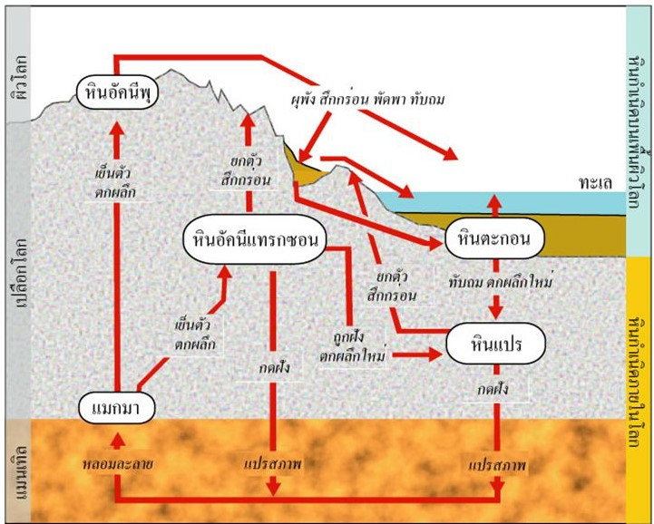

วัฏจักรของหิน (Rock cycle)นักธรณีวิทยาแบ่งหินออกเป็น 3 ประเภท ตามลักษณะการเกิดคือ หินอัคนี หินตะกอน และหินแปร เมื่อหินหนืดร้อนภายในโลก (Magma) และ หินหนืดร้อนบนพื้นผิวโลก (Lava) เย็นตัวลงกลายเป็น “หินอัคนี” ลมฟ้าอากาศ น้ำ และแสงแดด ทำให้หินผุพังสึกกร่อนเป็นตะกอน ทับถมกันเป็นเวลานานหลายล้านปี แรงดันและปฏิกิริยาเคมีทำให้เกิดการรวมตัวเป็น “หินตะกอน” หรือเรียกอีกอย่างหนึ่งว่า “หินชั้น” การเปลี่ยนแปลงของเปลือกโลกและความร้อนจากแมนเทิลข้างล่าง ทำให้เกิดการแปรสภาพเป็น “หินแปร” กระบวนการเหล่านี้เกิดขึ้นเป็นวงรอบเรียกว่า “วัฏจักรหิน” (Rock cycle) อย่างไรก็ตามกระบวนการไม่จำเป็นต้องเรียงลำดับ หินอัคนี หินชั้น และหินแปร การเปลี่ยนแปลงประเภทหินอาจเกิดขึ้นย้อนกลับไปมาได้ ขึ้นอยู่กับปัจจัยแวดล้อม คลิปการเกิดวัฎจักรของหิน |
|---|